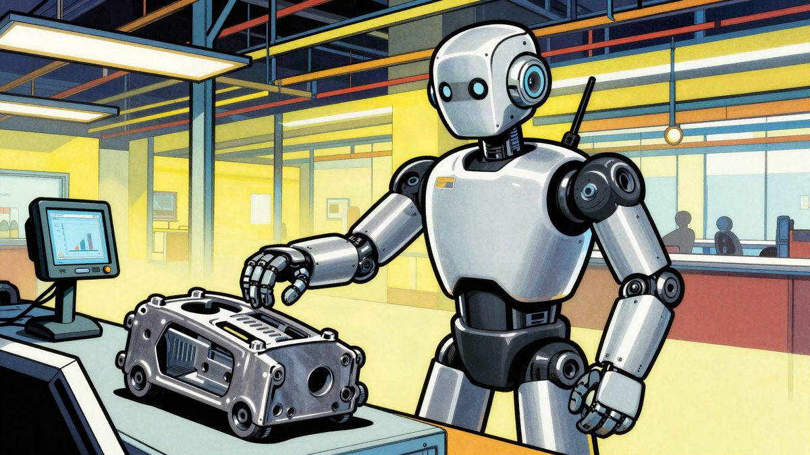

Humanoidni robot Apollo 2 sortira dijelove na linijama Mercedes-Benza u Njemačkoj i Mađarskoj

DeepMind, Apptronik i Mercedes-Benz uveli su humanoidnog robota Apollo 2 na proizvodne linije u Kecskemétu i Sindelfingenu. Robot samostalno sortira automobilske dijelove, a tvrtke tvrde da mu je uspješnost 96 posto. Koliko je robota u pogonu i hoće li ih biti u drugim tvornicama, nije rečeno.
DeepMind je u suradnji s Apptronikom i Mercedes-Benzom uveo humanoidne robote na proizvodne linije u Kecskemétu u Mađarskoj i Sindelfingenu u Njemačkoj. Apollo 2, kojeg je razvio Apptronik, samostalno sortira automobilske dijelove, a pokreće ga model Gemini Robotics 2.5. U tom zadatku, tvrde tvrtke, postigao je 96 posto uspješnosti.
Dva modela, dvije uloge
Za zadatak su korištena dva modela. Gemini Robotics ER prati cijeli tijek izvršavanja zadatka, a Gemini Robotics 2.5 upravlja pokretima ruke i šake robota.
Jeff Cardenas, suosnivač i izvršni direktor Apptronika, kaže da su se performanse modela znatno poboljšale već nekoliko tjedana nakon treniranja. Nakon prelaska na stvarnu Mercedesovu proizvodnu liniju pad performansi bio je minimalan, dodaje.
Gemini Robotics 2.5
Google taj model naziva svojim dosad najmoćnijim VLA modelom (vision-language-action), koji povezuje vid, jezik i fizičke radnje. Google tvrdi da Gemini Robotics 2.5 proširuje raspon vještina koje robot može svladati i ubrzava njihovo učenje, što povećava spretnost, pouzdanost i sigurnost. Roboti tako mogu izaći iz laboratorija i raditi u manje strukturiranim, stvarnim uvjetima, gdje mogu pomagati ljudima u širem krugu zadataka.
Izvor: iXBT
Povezani članci
 Unitree H2-X: humanoidni robot koji tvrdi da može podići auto i izvoditi borilačke vještine22. listopada 2026.
Unitree H2-X: humanoidni robot koji tvrdi da može podići auto i izvoditi borilačke vještine22. listopada 2026. REK je predstavio S.T.E.E.L, sustav kojim čovjek upravlja borbenim humanoidnim robotom12. studenoga 2026.
REK je predstavio S.T.E.E.L, sustav kojim čovjek upravlja borbenim humanoidnim robotom12. studenoga 2026. Humanoidni robot Zhongqing T800 je dobio Terminatorovu lubanju i Wolverineove oštrice11. studenoga 2026.
Humanoidni robot Zhongqing T800 je dobio Terminatorovu lubanju i Wolverineove oštrice11. studenoga 2026.